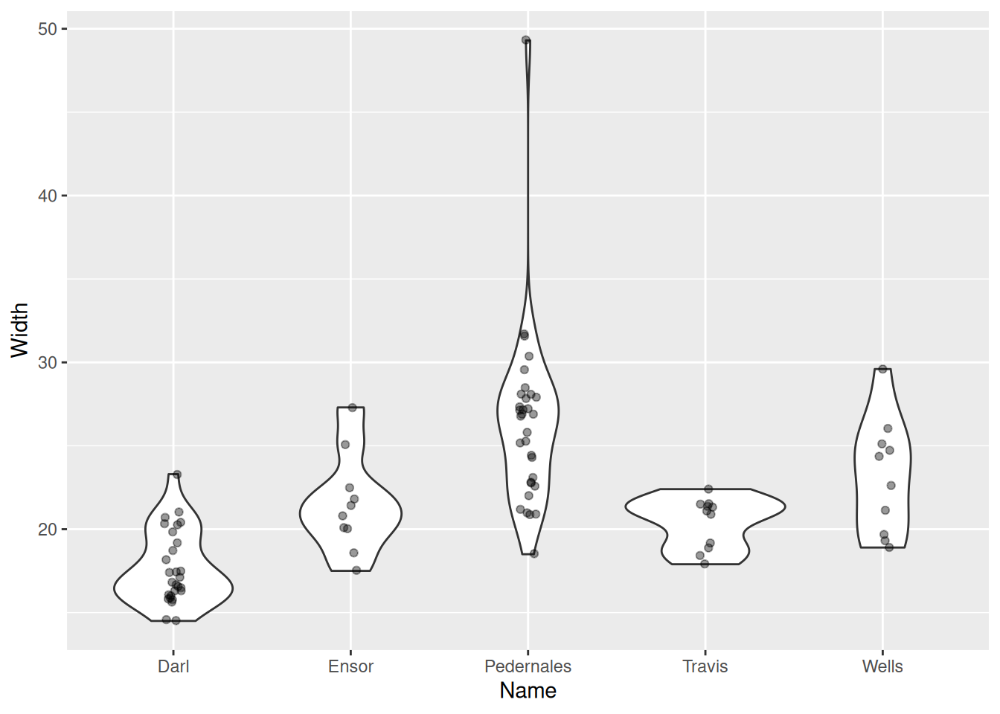
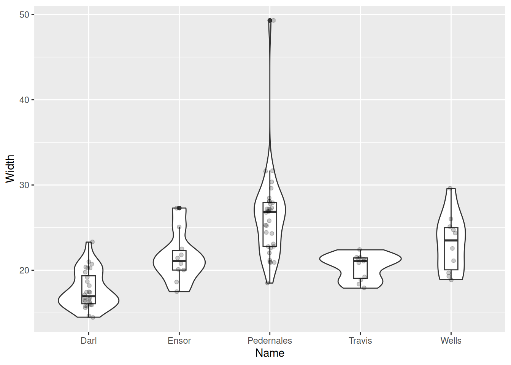
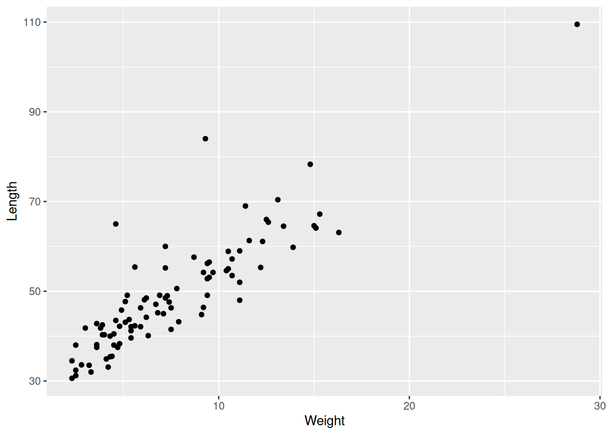
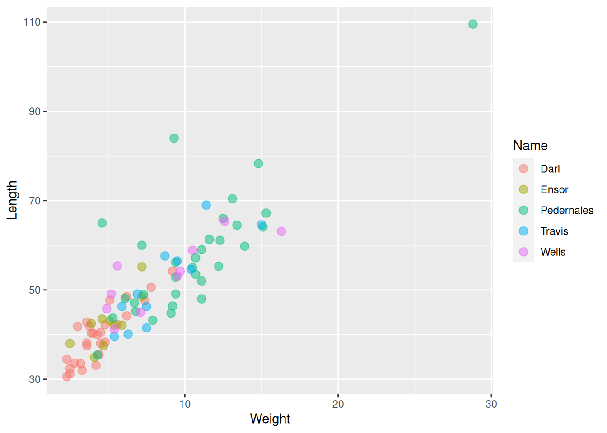

g <- ggplot(dartpoints) +
aes(x = Name, y = Width)Summaries and visualization of relationships
Reflection on the last lecture
Objectives
At the end of the lecture, you will know how to…
- Describe relationship of quantitative and qualitative variable.
- Create and read box plots and violin plots.
- Understand relationship of two quantitative variables.
- Count and interpret correlation.
- Create and understand scatterplots.
- Assess what relationship (covariation) occurs between your variables.
Relationship of quantitative and qualitative variables
Boxplot
Boxplot
g <- ggplot(dartpoints) +
aes(x = Name, y = Width)
g + geom_boxplot()Boxplot
Also box and whisker plot, displays five-number summary.

Violin plot
g + geom_violin()Violin plot
g + geom_violin() +
geom_jitter(width = 0.05, alpha = 0.4)
Violin plot
g + geom_violin() +
geom_boxplot(width = 0.15) +
geom_jitter(width = 0.05, alpha = 0.2)
Relationship of two quantitative variables
Correlation
A statistic describing a relationship between two continuous variables.
To what degree is a variable y explained by x?
Correlation coefficient r, from -1 to +1.
Correlation does not imply causation!
r = 1 – strong positive correlation
r = 0.5 – moderately strong positive correlation
r = 0 – variables are not correlated
r = -0.2 – weak negative correlation
r = -1 – strong negative correlation
Function cor()
cor(dartpoints$Length, dartpoints$Width)[1] 0.7689932cor(dartpoints$Length, dartpoints$Weight)[1] 0.879953cor(dartpoints$Width, dartpoints$Thickness)[1] 0.5459291Scatter plot
- Plot displying two continuous variables, x and y.
- x axis: explanatory variable, independent, predictor.
- y axis: dependent variable, response.
ggplot(dartpoints) +
aes(x = Length, y = Weight) +
geom_point()Correlation examples

Correlation examples

Scatter plots
ggplot(data = dartpoints) +
aes(x = Weight, y = Length) +
geom_point()
Scatter plots
ggplot(data = dartpoints) +
aes(x = Weight, y = Length, color = Name) +
geom_point(size = 3, alpha = 0.5)
Scatter plots
Scatter plots
Trends

Trends
Trends
Small multiples

Exercise
- Download data set with bronze age cups ( bacups.csv).
- Create a project in RStudio and load the data set.
- Explore the data set and its structure.
- What are the observations?
- What types of variables are there?
- Create a plot showing distribution of cup heights (
H). - Create a boxplot for cup heights divided by phases (
Phase). - Are there any outliers?
- Count correlation between cup height (
H) and rim diameter (RD). - Create a plot showing relationship between cup height and its rim diameter.
- Color cups from different phases (
Phase) by differently. - Describe the relationship, add a linear model to the plot.
- Label the axes sensibly.
Hints:
read.csv(),
str(),
colnames(),
summary(),
cor(),
ggplot() +
aes() +
geom_* + stat_*